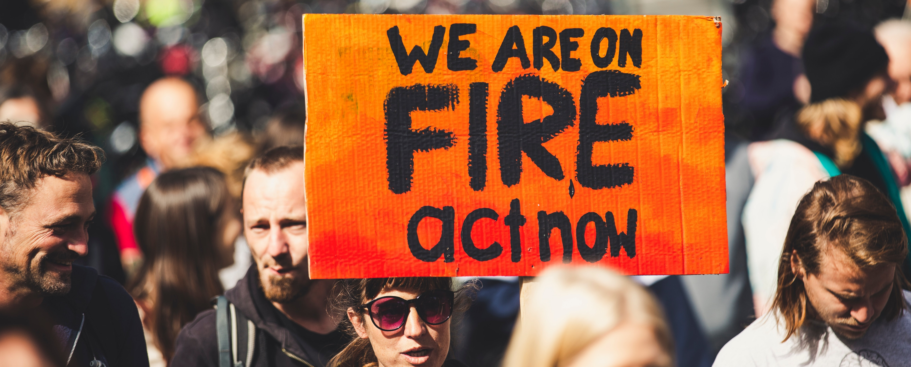

wELCOME TO MY BLOG
A little Political Insight

Software development is the process of conceiving, specifying, designing, programming, documenting, testing, and bug fixing involved in creating and maintaining applications, frameworks, or other software components.
JavaScript (js) is a light-weight object-oriented programming language which is used by several websites for scripting the webpages. It is an interpreted, full-fledged programming language that enables dynamic interactivity on websites when applied to an HTML document.
Coding is basically the computer language used to develop apps, websites, and software. Without it, we’d have none of the most popular technology we’ve come to rely on such as Facebook, our smartphones, the browser we choose to view our favorite blogs, or even the blogs themselves. It all runs on code.
React. js is an open-source JavaScript library that is used for building user interfaces specifically for single-page applications. It's used for handling the view layer for web and mobile apps. React also allows us to create reusable UI components.
The famous Nyatambe village is quickly getting populated and we tend to subdivide it to suit given clans. This was a village that extended the vast Gwassi South Location spanning Ongukwa, Osoi, Kona-Kogelo, Lwanda, Lak-Nyiero, Aora Olemo, God Oloo, Owich, Kodienge, Ochuna, Mananja, Got Adundo, Sokoni, Orore and many more. It has been sub-divided with every 1km2 seeking to get their name.
Standing in the middle of this village is the Lak-Nyiero center. The name is funny and the structures are giving the real reason why it holds to the name. Once I heard Hon. Consolata Yambo call it the City of Surprise for she said she would transform and give anew face to in her political manifesto. Nonetheless, this center has for a long time been a social center for the former Nyatambe Village and many would gather here to story and share happiness. It is the center of politics in Suba South or at least it has produced the most revered politicians in Suba South. If you never knew; one of the grandsons of the ancestors of this place know as The Late Otieno Jonyo was formerly a paramount chief of the then Suba. This tells us how long the political journey has been.
There is another cohort of politicians. Hon. { Silver Ochola Gaa, the Late Misori Malgayo, Felix Nyauch, the Late Joshua Ooko(former Councilor Nairobi) the Late Nyaduwa Ong’enge} these were all members of Nyatambe Village who enjoyed the proximity of Lak-Nyiero.
The last cohort comprises Hon.{Consolata Yambo, Caroli Omondi, John Mbadi, George Mboya, Ben Odero(Former aspirant gubernatorial post) }. This will tell you how blessed we are as Nyatambe.
Owing to all these I feel Nyatambe and specifically, Laknyiero is a political center. I am privileged to have been born in the center of this village and the center of Laknyiero.
I have grown hearing politics and understanding it. I witnessed the 1997 KANU-FORD battle in Laknyiero, I can confess I didn’t know anything but at least I understood it was a political fight though I never understood politics. I witnessed the massive stoning of Hon. Zaddock Madiri in 2002 and I can attest I saw the one who threw the first stone, during this time I was young too. In 2007, we produced our all, I still never comprehended politics but at least I could understand that Rateng had more votes at least judging from how he fed people and how noisy he was around the home.
In 1997, I supported Nyaduwa maybe because my dad was one of his friends but we did not get to the ballot due to unavoidable circumstances, I had to go with Olith because one of my uncles was his driver(the Toyota Mazda Pickup). In 2002, my mum had just passed and my uncle took me in, he was one of the strategists of Consolata and you can guess who I supported that year. The other uncle was still the driver of Olith though.
In 2007, my uncle shifted support to Caroli Omondi but I had Mboya at heart. Caroli is my uncle and my cousin(we are both great-grandsons of Oure-Karungu Kambumo) yet I thought Mboya was closer and supported him in 2007.
2013 was an easy ride for Mbadi since the likes of Odundo and Ominde were not serious. Rateng too was not serious or maybe he had not adequate resources. I had not much interest in politics this time but I pretended to support Ominde because I had just landed my first job at Kisegi so I had to do as the Romans did, If I had a vote I would give him the vote though(reasons are personal).
The climax is 2017. I had understood lots of things and my heart was won forever. I understood how Suba sub-tribes relate and many more. I knew Caroli was the best MP. With all these said I feel I should get to share my idea


For a very long time, I have never given an opinion regarding my political stand, yeah I have just been a critic. I want to take this opportunity to say I this to the Kadibuoro men who are vying since the Kadibuoro politicians do not learn from mistakes 1. In 1997, I didn’t know much but I feel that were it that Ong’enge was in the race we would have lost because both Hon Ongenge and Hon Nyauchi were all from Kadibuoro. 2. In 2002, Hon. Nyauchi and Hon. Consolata both from Kodhiambo family(Kadibuoro) contested for the position of the Member of Parliament and lost to Zaddock. 3. In 2007, Hon. {Caroli, Mboya} from the now reformed Kakiriga family Hon. { Nyauchi, Consolata} from Kodhiambo family were in the race and suffered the same fate. They lost to Mbadi. 4. This mistake may be worse this time around. Hon { Frank, Caroli, Ogada} all from Kamasese, Hon Marieba who will get the votes of his uncles from Kamasese, Hon Kasuku too is from Kadibuoro. If they don’t humble themselves and resort to a single person then we may lose as we lost the last 18years.
It has been so painful to lose a game when you have the best players. The songs I heard in 2007, 2013, and 2017 were so heart pricking, please. Let us be the one to sing these songs this time around.
I feel kadibuoro may be used this time round and our two sons are not seeing it. It is a scheme to lock us power and remain a laughing stock. Let my Fathers Like Caroli, Ogada and Kasuku think critically. I want to liken our brothers to the gikuyus. They will cheat you to the end and then change at the last minute.
Caroli knows this. He has supported many and when elections reach his votes at God-Oloo are a true reflection of who they are. Let not anyone be cheated that Mheshimiwa has promised to work with them so they have the lisuria(majority) votes. This is subject to change and it will never favor the Dibuoro clan.